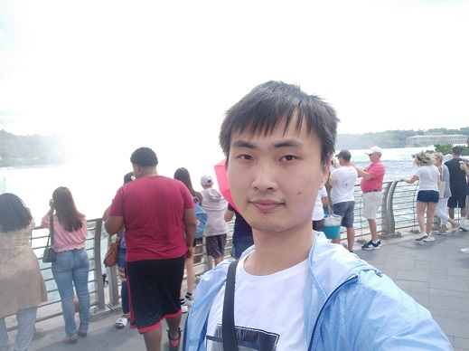

Who am I?
I am an undergraduate student in Tsinghua University. I study in Department of Computer Science from 2015 and will graduate in 2019. I work in Conversational AI Group.
Me(temperorily Rem as a placeholder)
I am an undergraduate student in Tsinghua University. I study in Department of Computer Science from 2015 and will graduate in 2019. I work in Conversational AI Group.